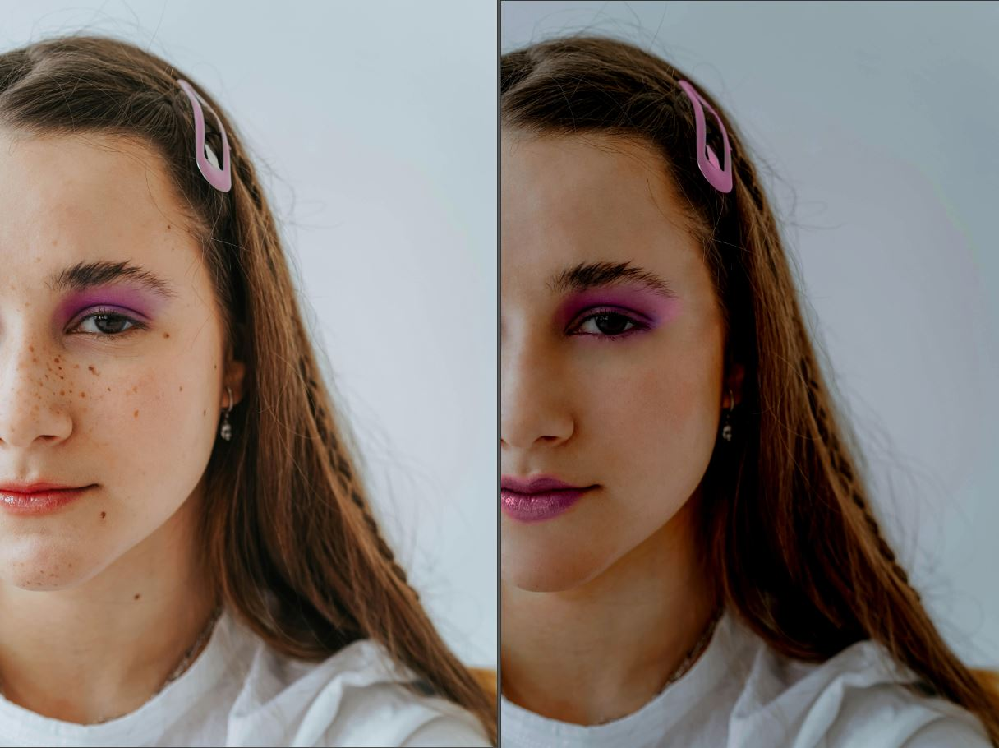
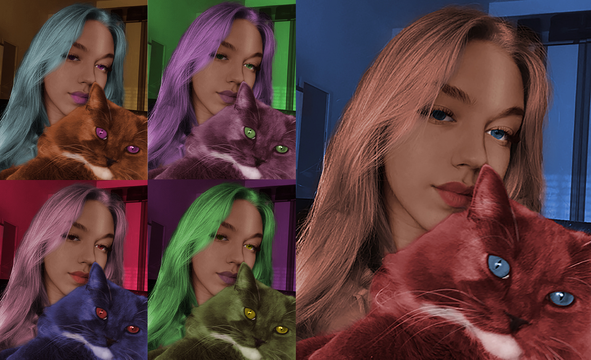
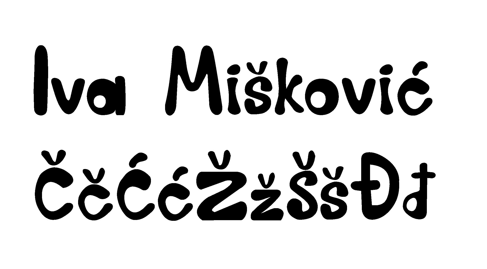
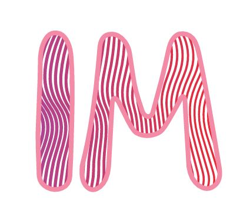
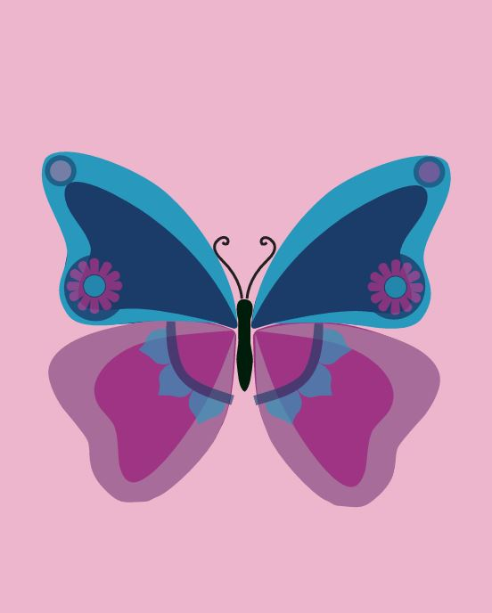
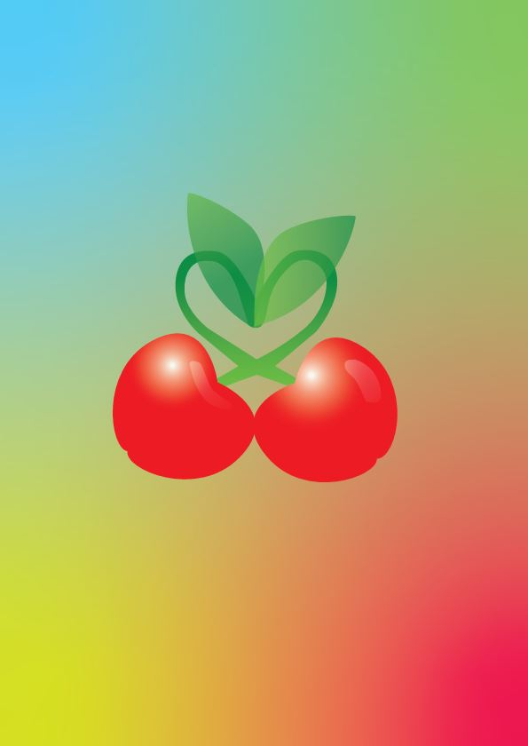
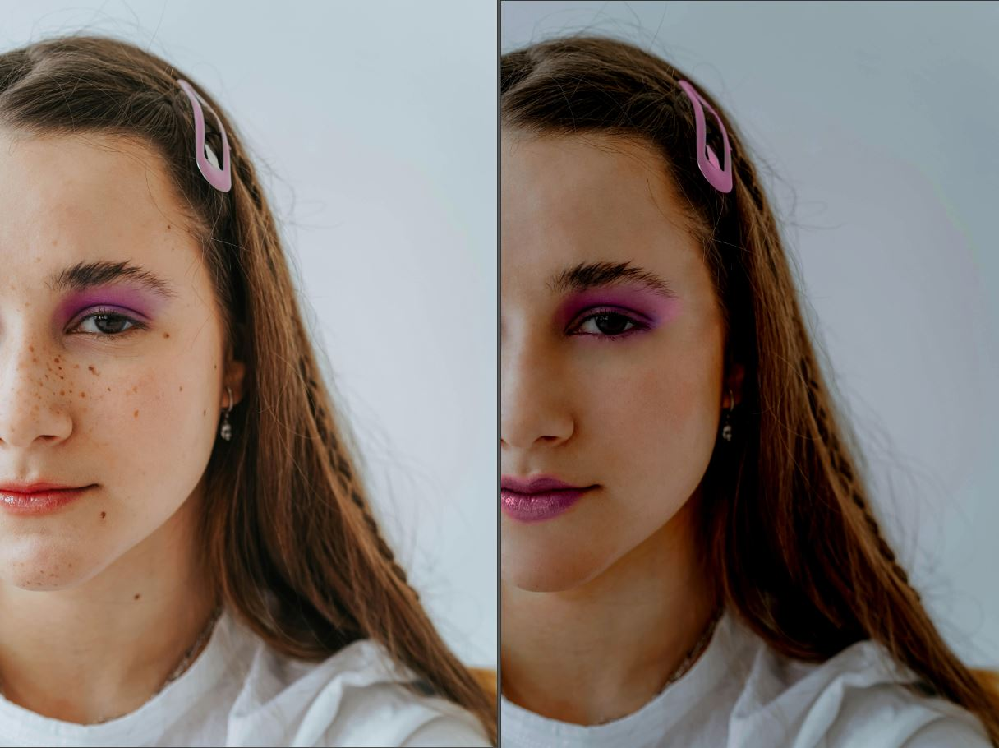
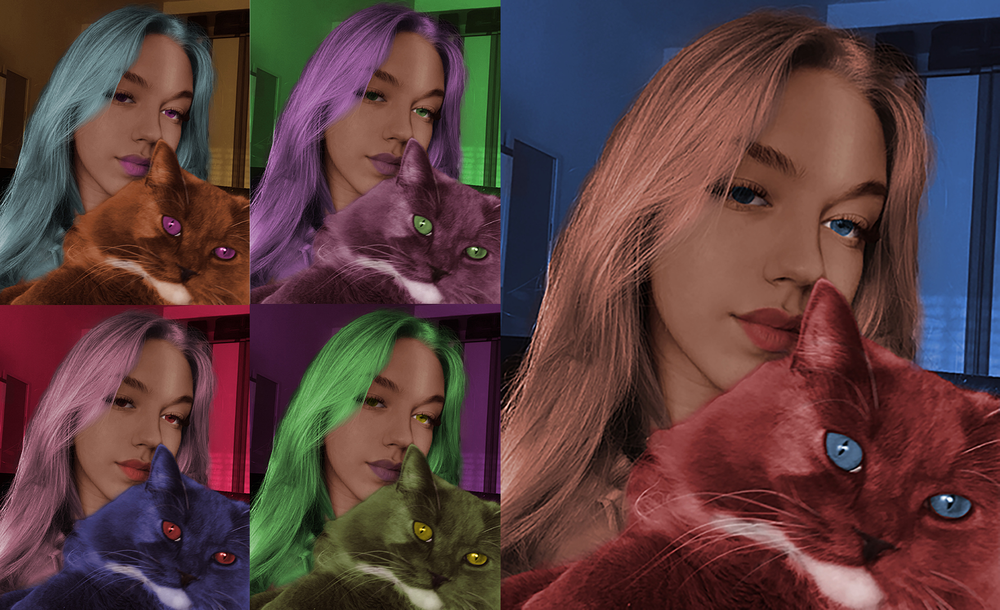

-program: Adobe Photoshop

6.VJEŽBA-koloriranje
-program: Adobe Photoshop

7.VJEŽBA-fotomontaža
-program: Adobe Photoshop

1.VJEŽBA-font
-program: FontForge

2.VJEŽBA-Bezierova krivulja, precizno crtanje
-program: Adobe Illustrator

3.VJEŽBA-boja, transformacije
-program: Adobe Illustrator

4.VJEŽBA-gradijenti, transparencija
-program: Adobe Illustrator

5.VJEŽBA-retuširanje
-program: Adobe Photoshop

6.VJEŽBA-koloriranje
-program: Adobe Photoshop

7.VJEŽBA-fotomontaža
-program: Adobe Photoshop
8.VJEŽBA-cinemagraf
-program: Adobe Premiere,Adobe Photoshop

9.VJEŽBA-video obrada
-program: Adobe Premiere
10. i 11. VJEŽBA-web stranica u HTML-u i postavljanje na github
-program: Adobe Dreamweaver